Bimnox
Set up a job once, let it run every week.
- C#
- .NET Framework 4.8 / .NET 8 / .NET 10
- Revit API
- WPF
- Autodesk Platform Services
- Windows Task Scheduler
The problem
Model checks and deliverable exports are the jobs everyone agrees matter and nobody has time to run by hand on dozens of models every week.
What it does
Bimnox (BIM Nightly Orchestration and eXport) is a desktop program and a headless Revit worker that run seven tasks across many models in one go, now or on a weekly schedule: Autodesk Model Checker, the IFC export, the NWC export for Navisworks, PDF and DWG sheet exports, a model health report and a change report. The program starts the matching installed Revit in the background, opens each model once, runs every chosen task on it and closes it without saving.
Four kinds of source: chosen ACC cloud models, an ACC folder, a local or network folder, or a fixed list of files. Folders are read again at every run, so new models are picked up, and exports and reports can be uploaded back to ACC afterwards.
Repeat runs cost little. A model whose source, settings and outputs have not changed since the last verified run is skipped. Results land in one output folder with a history workbook for Excel and Power BI, plus an optional Teams message after each run.
One codebase, four apps. Besides Bimnox itself there are three single-task editions, each with its own name and icon for teams that need only one job: Bulk Model Checker (Model Checker reports, a history table for Power BI and a Teams message after each run), IFC Bulk Export (presets, space boundaries and user-defined property sets) and NWC Bulk Export.
It is the current generation of scheduled checking and export services I first built in 2023: nightly model checks feeding Power BI, and nightly NWC and DWG exports, so nothing depended on someone remembering.
Features
- Seven tasks in one pass: Autodesk Model Checker, IFC export, NWC export for Navisworks, PDF and DWG sheet exports, a model health report and a change report
- Revit opens each model once for every task of a job and closes it again without saving
- Four kinds of source: chosen ACC cloud models, an ACC folder, a local or network folder, or a fixed list of .rvt files
- Folders are read again at every run, so models added later are included
- Every installed Revit from 2023 to 2027; each model goes to the version that can open it, older models are upgraded in memory only
- Weekly runs through the Windows Task Scheduler, also while the program is closed
- ACC both ways: plain .rvt files are downloaded for the run, and IFC, NWC, PDF, DWG files and reports can be uploaded back
- Skip unchanged: a model whose source, settings and outputs have not changed since the last verified run is left out
- PDF of every sheet, of a sheet set saved in the model, or of sheets matching a number pattern; one PDF per sheet or per model
- Model health report per model: warnings, families, CAD, links, views, groups and rooms
- Change report: elements added, deleted and changed since the job's last report
- A time limit per model; a model that hangs is closed and reported while the others carry on
- One output folder (a SharePoint library synced with OneDrive works), a history workbook for Excel and Power BI, a Teams message after each run
- Single-task editions built from the same code, each with its own name and icon: Bulk Model Checker, IFC Bulk Export and NWC Bulk Export
- German and English interface; per-user install without admin rights
See it
Screenshots & demos
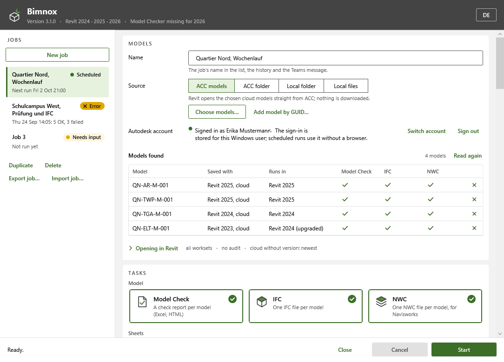
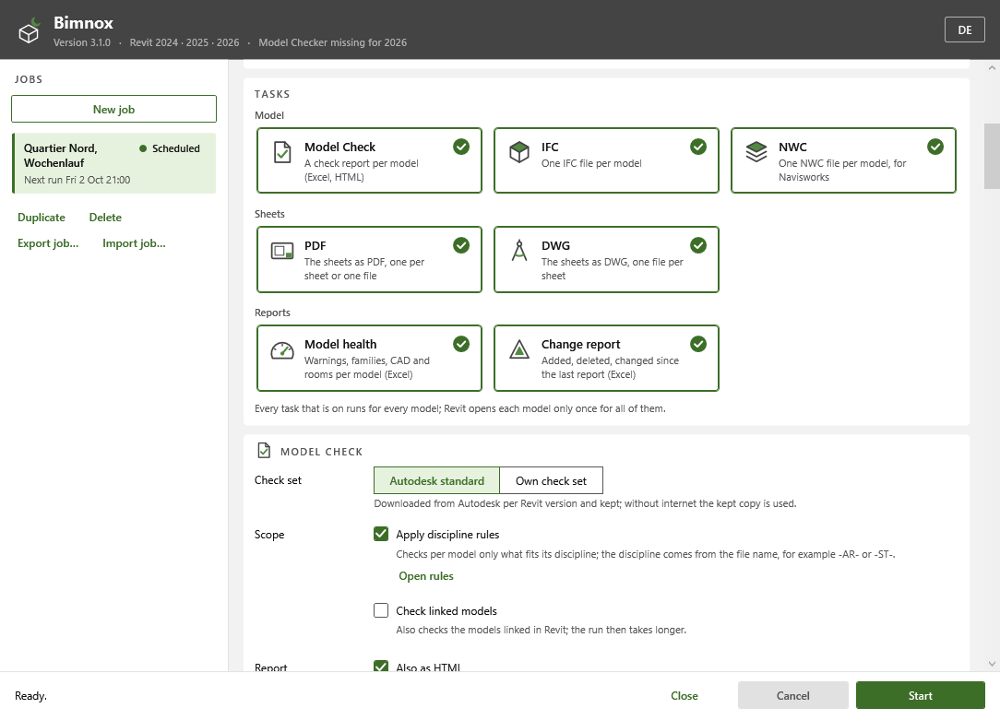
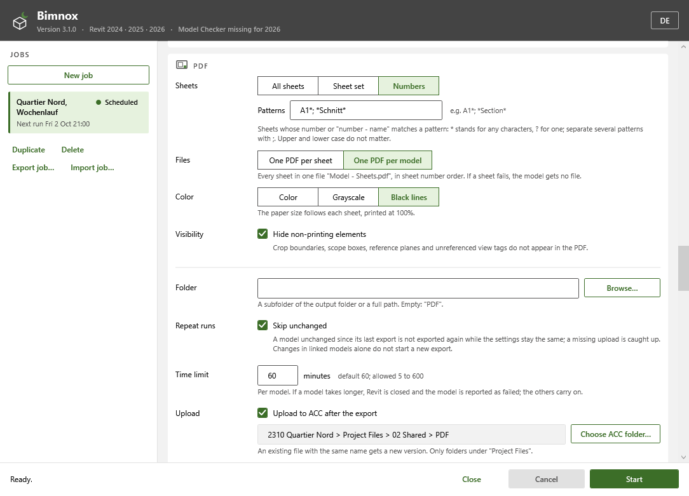
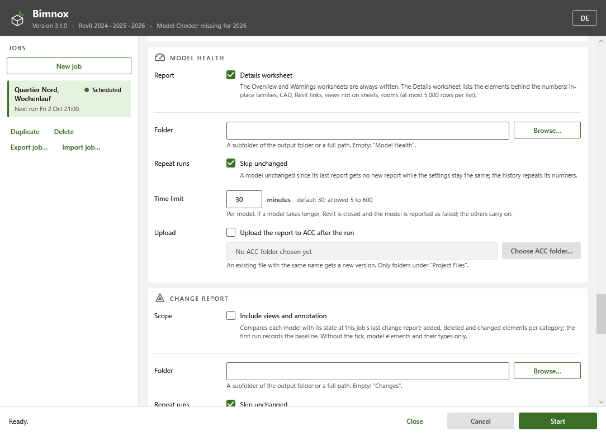
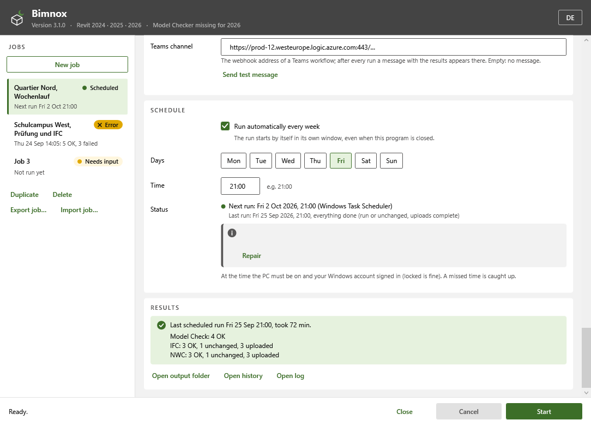
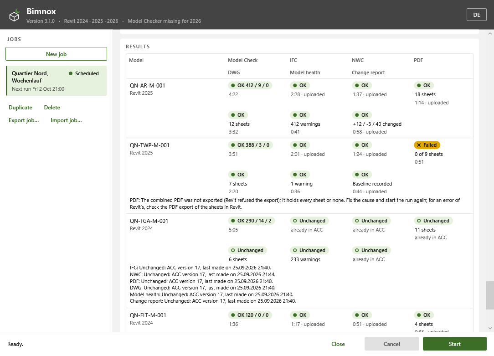
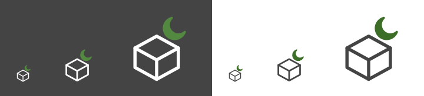
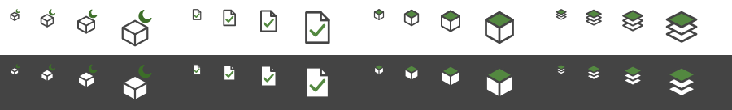
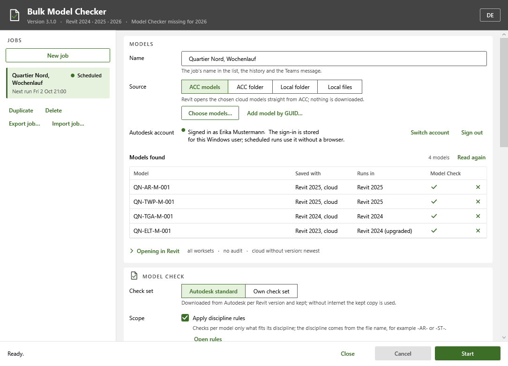
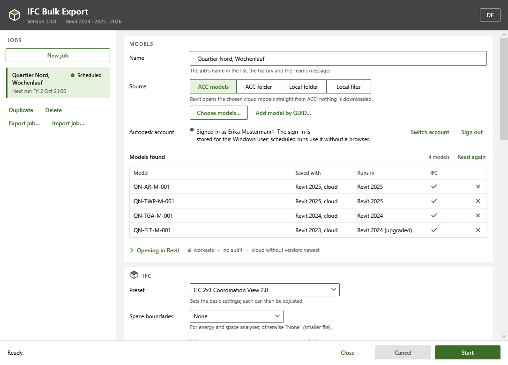
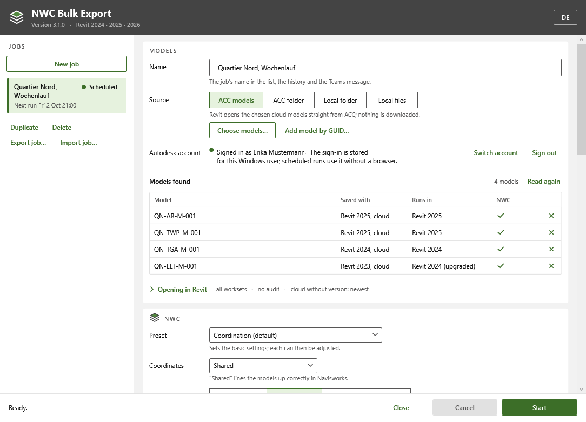
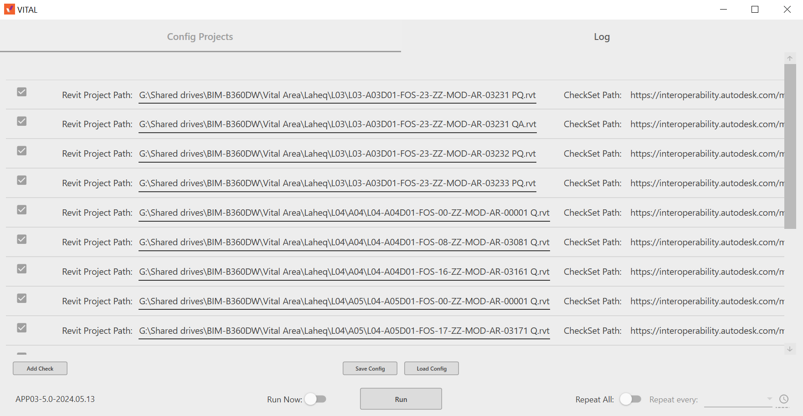
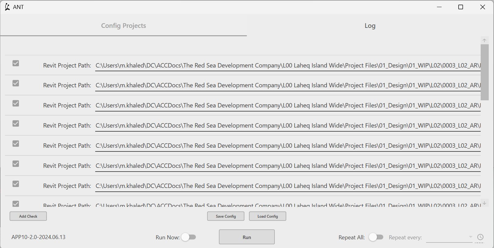